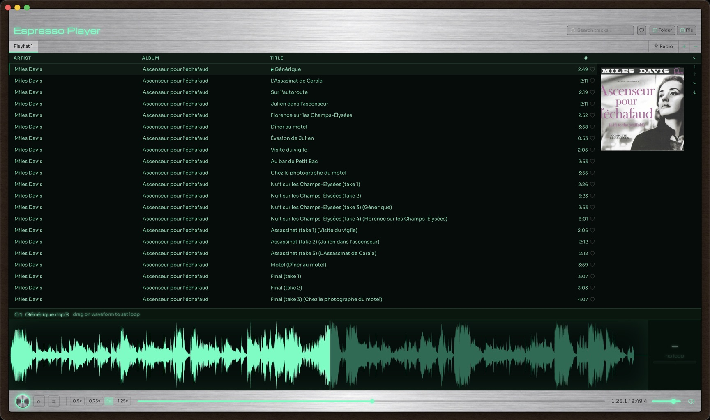
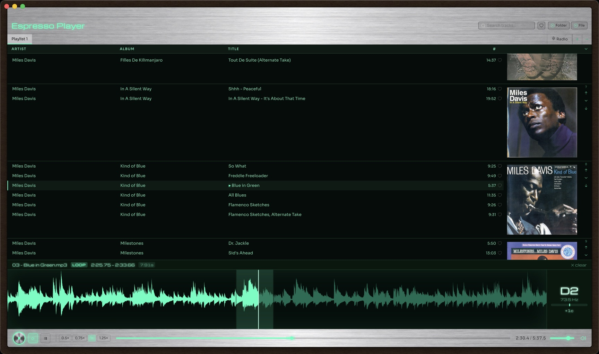
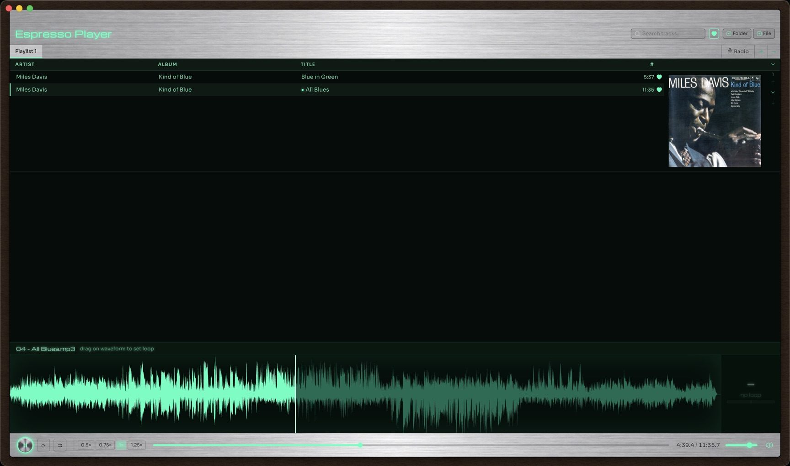
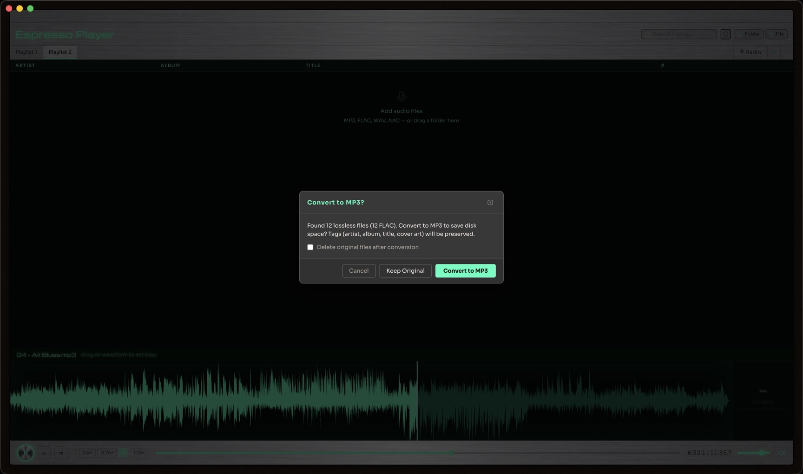
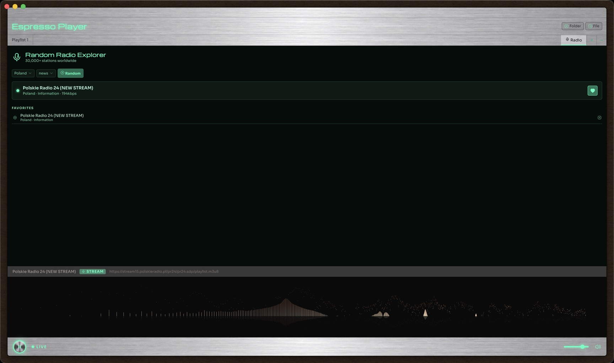

Espresso Player is a local music player for people who still keep a real music library — with a loop editor and pitch tuner for musicians, one-click lossless-to-MP3 conversion, and a built-in internet radio browser with 30,000+ stations worldwide.

Five things people actually open Espresso Player for.
Import whole folders at once. Tracks are grouped by album with full-size cover art, sortable by artist/album/track number, with instant search across your entire library and support for multiple playlists.
Drag directly on the waveform to set a loop region, slow playback down to 0.5× without changing pitch, and read the exact note and cents off-pitch in real time — made for musicians working out a solo or a riff.

One click favorites any track — in your library or on internet radio — and a single toggle filters your whole playlist down to just the songs you've marked.

Drop in lossless files and Espresso Player offers to convert them to MP3 on import — artist, album, title and embedded cover art all carry over. Whole albums ripped from a single cue-sheet file are split into properly tagged tracks automatically.

Browse live stations by country and genre, hit "Random" to discover something new, and favorite the ones worth keeping — with a live spectrum visualizer while a stream plays.

Fix artist, album, title, track number, year and genre right from the playlist — no separate app needed.
Keep separate playlists per project or mood, move or copy tracks between them, and reorder albums freely.
Drag a folder straight onto the playlist, or use "Update Folders" to pick up new files added since the last import.
0.5×, 0.75×, 1× and 1.25× playback speed with pitch preserved — one click, no menus.
Filter your whole library by artist, album or title as you type.
All the common formats play natively — no codec packs, no plugins.
Free, no account, no telemetry.
Signed & notarized by Apple — opens normally, no security warnings.
Unsigned installer — Windows SmartScreen may warn on first run; click "More info" → "Run anyway". Espresso Player is open source and applying for free code signing via the SignPath Foundation.